01
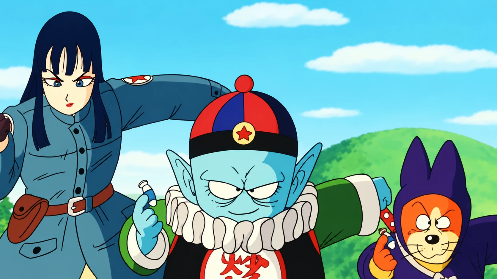
SAGA
Pilaf
La búsqueda de las Esferas une a Goku y Bulma y define el espíritu aventurero del comienzo.
- OBJETIVO
- Las Esferas del Dragón
- MOMENTO CLAVE
- Primera invocación de Shenlong
De la aventura terrenal al multiverso: cada etapa cambia el tono, la escala y la forma de entender el poder.
Tres eras. Quince arcos. Un archivo visual para recorrer la franquicia sin perder ritmo: más compacto, más cinematográfico y con identidad propia para cada saga.

PILAF · TORNEOS · RED RIBBON · PICCOLO DAIMAŌ
La aventura antes del mito.
Goku descubre el mundo mientras las Esferas del Dragón, los torneos y sus primeros grandes rivales convierten una aventura imprevisible en el origen de una leyenda.
Una colección visual de los seis arcos que construyen la etapa más aventurera y terrenal de la franquicia.

La búsqueda de las Esferas une a Goku y Bulma y define el espíritu aventurero del comienzo.
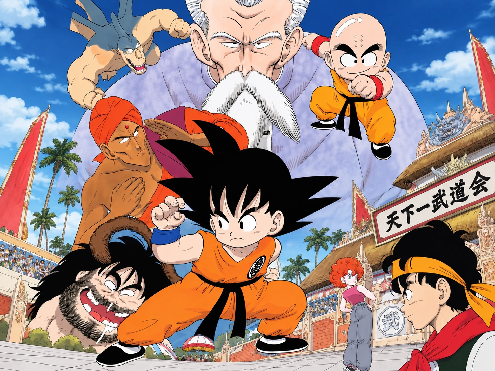
El entrenamiento con Roshi desemboca en el primer gran examen de Goku y Krilin.
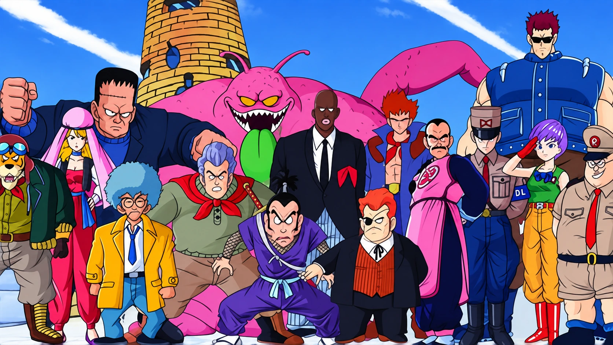
Goku enfrenta una organización global y crece al superar bases, mercenarios y asesinos.
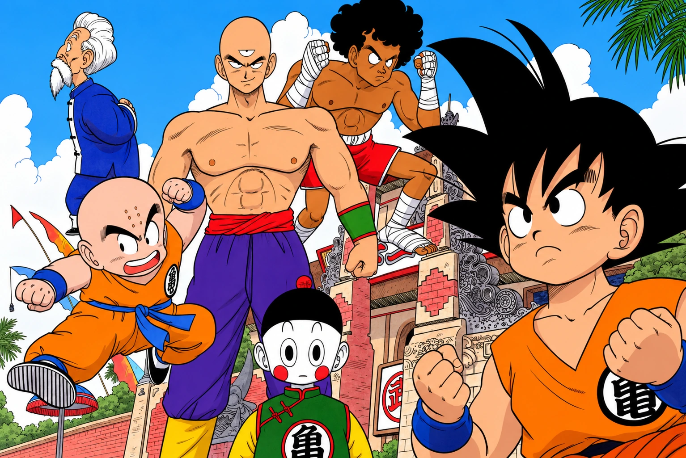
Las escuelas de Roshi y Tsuru chocan en un torneo más técnico, intenso y agresivo.
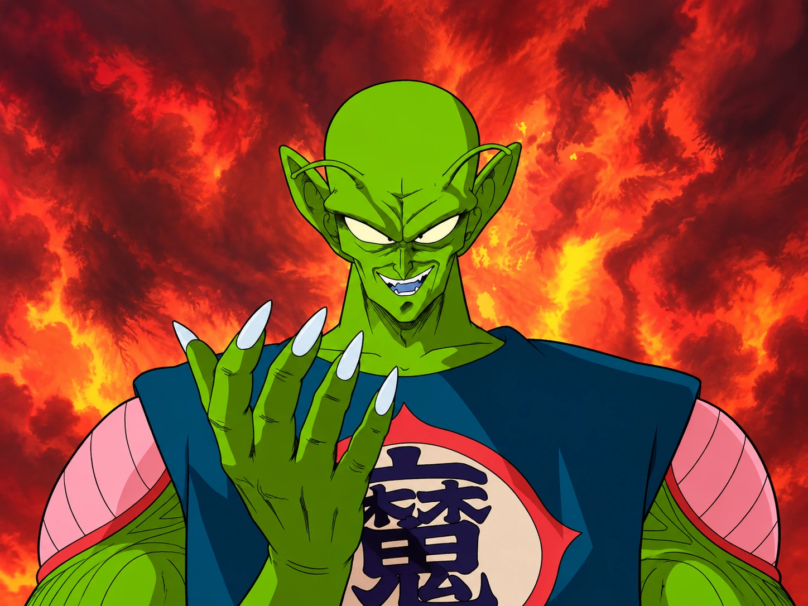
La aventura pierde su inocencia cuando una amenaza mundial obliga a Goku a luchar más allá del torneo.
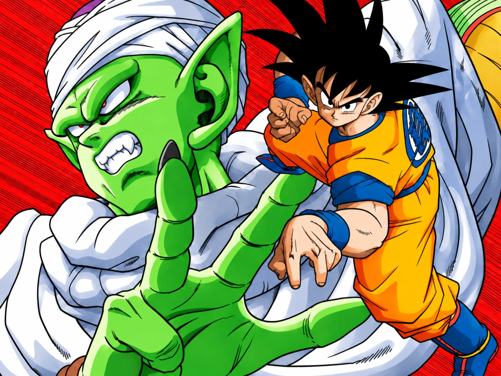
Goku vuelve adulto para enfrentar a Piccolo Jr. y cerrar la primera era como campeón.

SAIYAJIN · NAMEK · ANDROIDES · MAJIN BUU
Una nueva escala de poder.
La historia se expande hacia el origen saiyajin de Goku, guerras planetarias, transformaciones icónicas y amenazas capaces de llevar el conflicto más allá de la Tierra.
La era más intensa: cuatro arcos, mayor contraste y un diseño con más empuje visual para la fase más recordada de la franquicia.
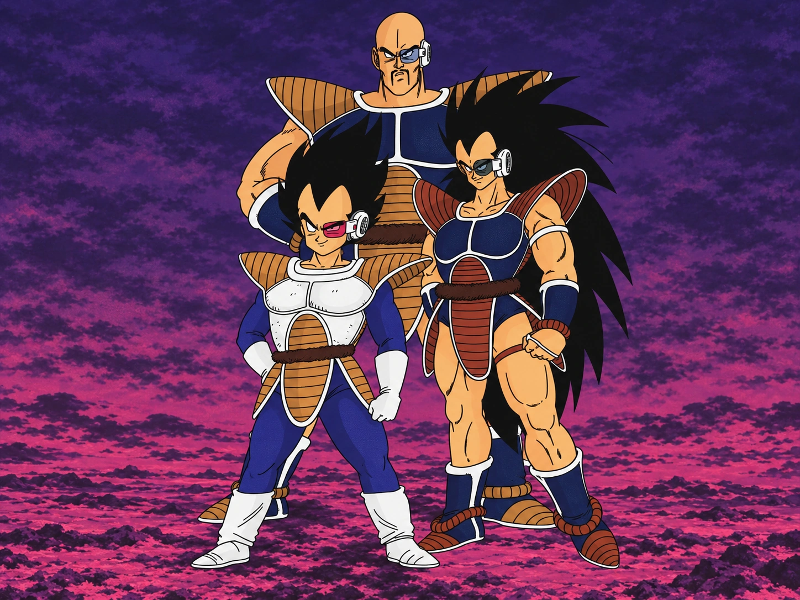
El origen saiyajin de Goku sale a la luz mientras Vegeta y Nappa llevan la amenaza hasta la Tierra.
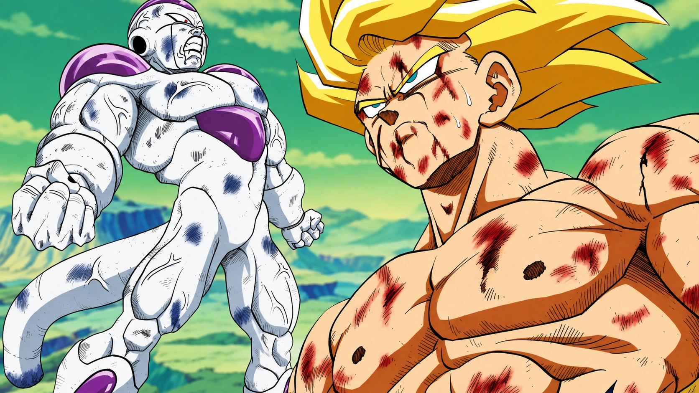
La búsqueda llega a Namek y el duelo contra Freezer cambia para siempre la escala de la serie.
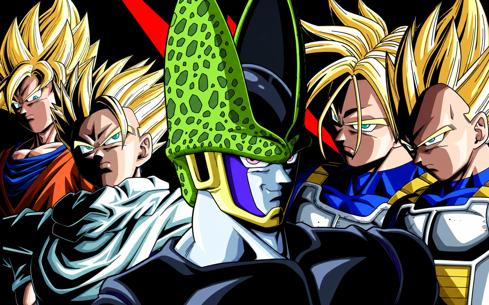
La amenaza definitiva pone a Gohan en el centro y lo obliga a superar sus propios límites.
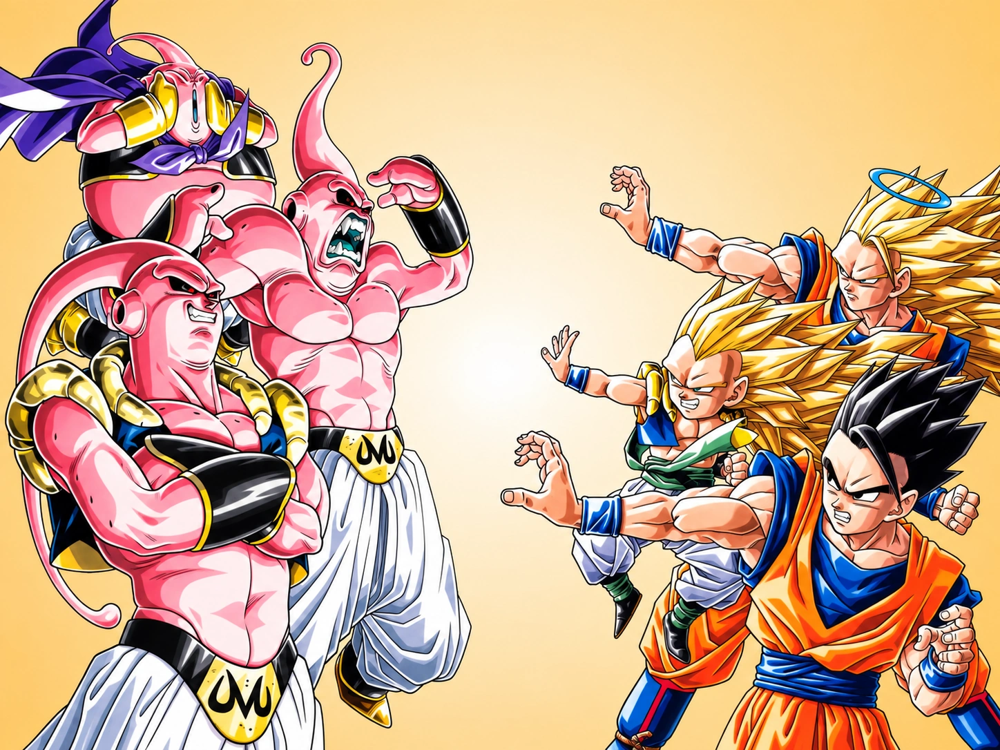
Magia, fusiones y destrucción total llevan la historia a su escala más extrema.

DIOSES · UNIVERSOS · FUTURO · TORNEO DEL PODER
El poder ya no tiene un solo universo.
Dioses de la destrucción, ki divino y universos paralelos amplían la mitología. La fuerza deja de ser solamente cantidad: control, técnica e instinto pasan al centro.
Más limpia, luminosa y expansiva: una composición editorial para los arcos que abren la historia al plano cósmico y multiversal.
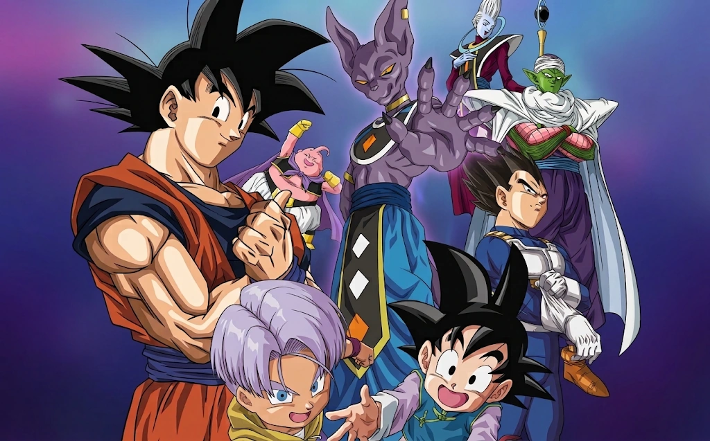
Beerus introduce una nueva jerarquía de poder y abre la puerta a la energía divina.
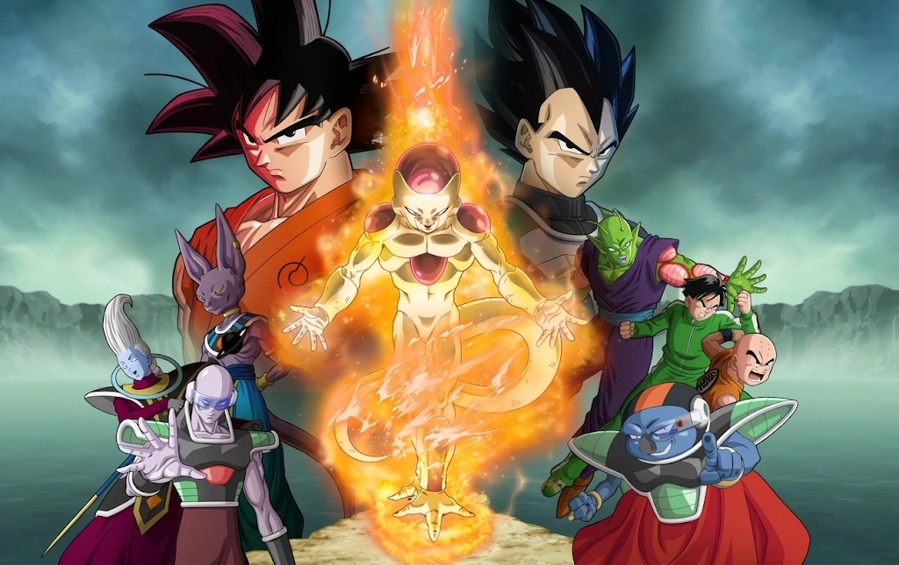
Freezer regresa y obliga a Goku y Vegeta a dominar el poder divino con precisión.
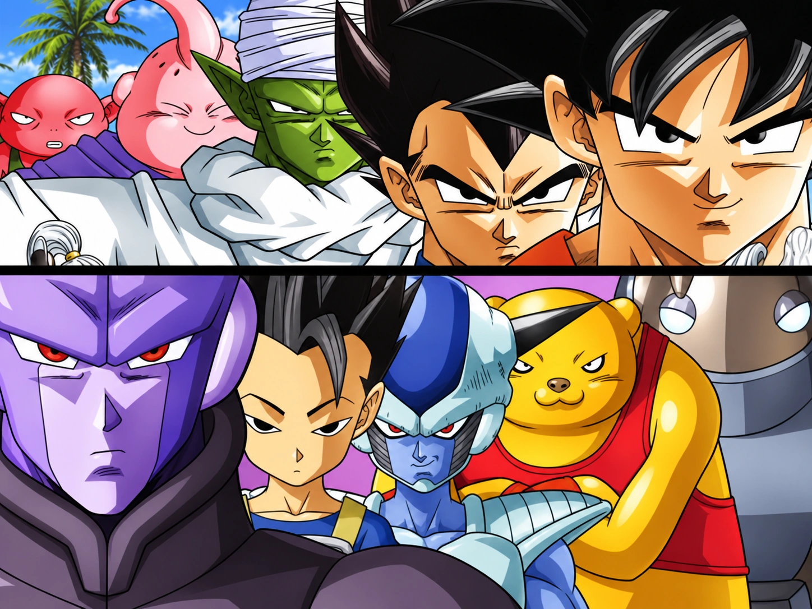
El choque entre universos presenta a Hit y convierte la técnica en el centro del combate.
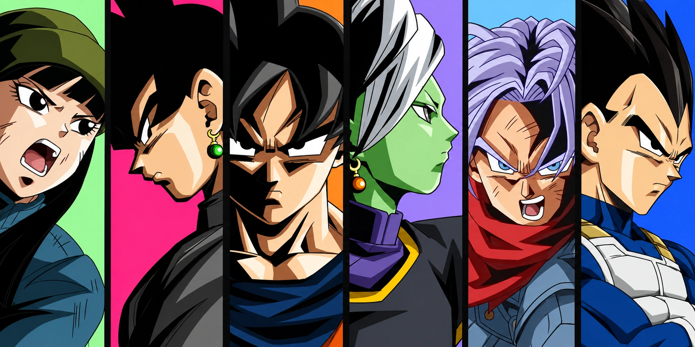
Trunks vuelve desde un futuro devastado donde Goku Black y Zamasu imponen su idea de justicia.
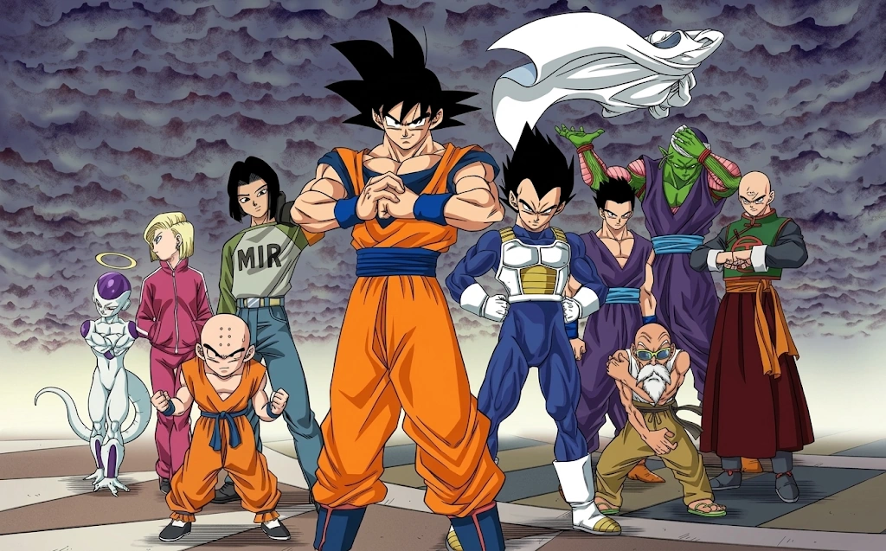
Ocho universos compiten por sobrevivir y Goku alcanza un estado guiado por el instinto.